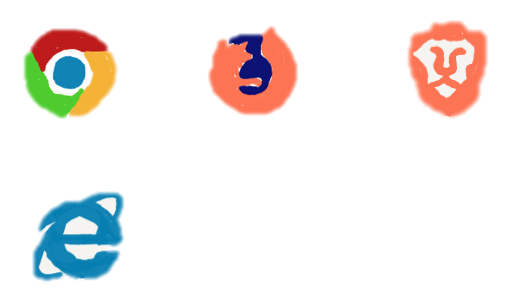
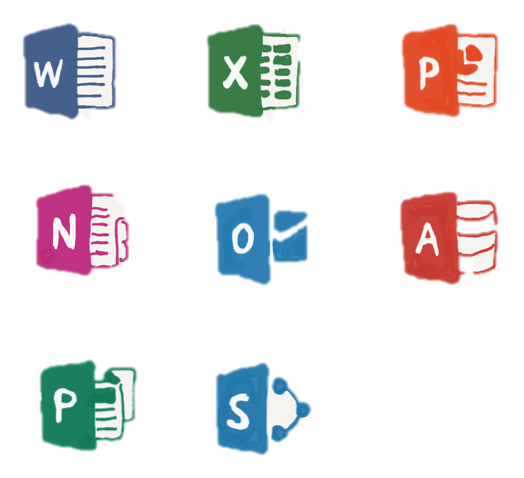
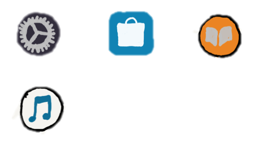
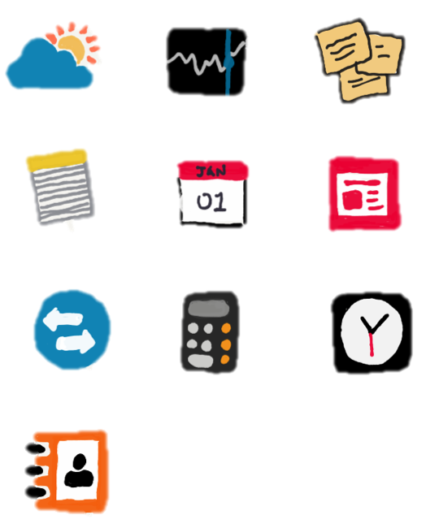
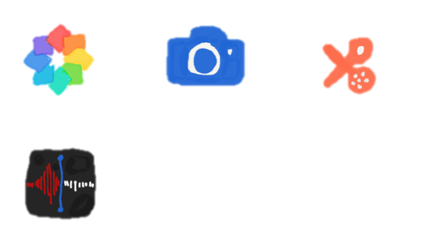

IdeaOS. Nothing else like it.
IdeaOS is the operating system that powers every IdeaBox. It lets you do things you simply can’t with other
computers. That’s because it’s designed specifically for the hardware it runs on — and vice versa. IdeaOS comes
with an entire suite of beautifully designed apps and great feature that no other Operating System has. IdeaOS
has great inbuilt apps and a high level of privacy and security.
Easy to Use
Dark Mode is less distracting to the eye and puts the focus
on your content. Dynamic Desktop
makes your IdeaBox even cooler with time-shifting desktop pictures that match the time of day wherever you are.
And Stacks keeps your desktop free of clutter by automatically organizing your files, images, documents, PDFs,
and more into tidy groups.
Files lets you easily browse and organize the files on your
IdeaBox — and those stored on cloud.
View files by icons, in a list, or with Gallery View, which helps you quickly locate a file by how it looks.
Drag and drop files into folders in the sidebar. And use the Preview pane to see all of your files’ metadata,
quickly create .zip files, and share using the handy Share menu.
Quick Search helps you quickly and effortlessly find what
you want, like documents on your Mac,
movie showtimes, and flight departure and arrival times. Just type a few keystrokes in the Quick Search search
field and autocomplete immediately shows you relevant results.
A simple two-finger swipe from the right edge of your
trackpad brings up Notifications where you
can see all the alerts that have come in recently. It’s also where you can customize your Notification Page with
helpful widgets or handy information.
Taking a screenshot on the Laptops has always been a fairly
simple affair of pressing Command +
Shift + 3 for a full screen capture, or Command + Shift + 4 for a single window screen capture. Those tricks
work on IdeaOS, but now with a new keyboard shortcut Command + Shift + 5 which will bring up a little screen
shot capture utility with a full range of capabilities, including taking complete screenshots, partial
screenshots, capturing windows or apps, and even screen recording tools.
Privacy and Security
Privacy.
Have you ever wanted to know exactly which IdeaBox apps have access to things like
your location, contacts, calendars, reminders, Photos, Camera, Microphone, full disk access, and more?
IdeaOS makes this easier than ever before, making our operating software particularly nice for the
privacy conscious.
Security.
We design IdeaBox’s hardware and software with advanced technologies that work
together to help you run apps safely, protect your data, and keep you safe on the web. Our inbuilt
firewall makes it safer to download and install apps from App Store and the internet.
Built in Apps
Browser.
Preinstalled browser apps let you choose which browser you want to use based on the
work you are doing. If you don't want these apps, they are deletable.

Social.
Social apps such as mail, messages and video call made by us are pre installed on
IdeaOS. These great apps with great features are only available on IdeaOS.
Microsoft.
Microsoft app have been the favourites when it comes to creating documents,
presentations, spreadsheets, mailing, etc and is accessible through a range of devices. Including
microsoft apps as preinstalled apps on IdeaOS makes it easier for users to work offline.

Basic.
Many great apps which help users in tasks such as music, setting, app store and
books, designed for IdeaOS are preinstalled on our operating software and have great user
experience.

Tools.
Tools such as calculator, unit contacts, clock, notes, calendar, news, unit
converter, calculator, sticky notes, weather and stocks are not only available as widgets on your
dashboard but are also available as apps so that you don't need to go to the dashboard every time you
need to use a small tool.

Productivity.
Productivity tools such as Voice Memos, Movie Maker, Camera and Photos help you
record and capture pictures and videos while also letting you edit them to create beautiful
creations.

Cloud
Every IdeaBox app uses Cloud — it’s the magic behind the seamless experience you have
with all your IdeaBox. So you always have your photos, videos, documents, email, notes, contacts, calendars, and
more on whatever device you’re using. And any file you store in Cloud Drive can be shared with friends, family,
and colleagues just by sending them a link. Cloud Drive also lets you access files from your all your devices.
It’s all done automatically. Just like that.